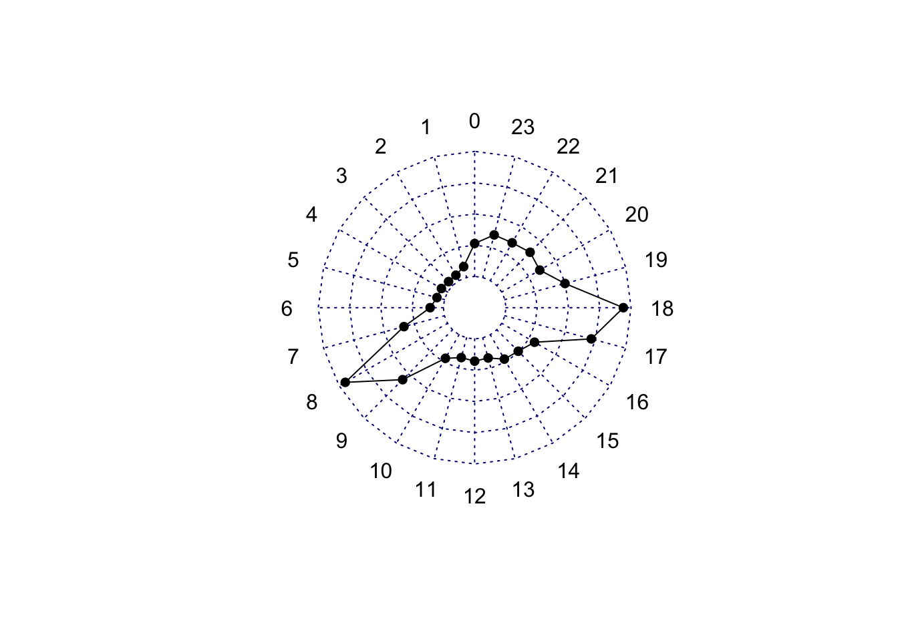

The murder of Sarah Everard has horrified everyone across the UK, and has re-ignited discussions about women’s safety in public places. While many point out that something so horrific as murder by a stranger is a rare event, one reaction has been an outpouring of shared experiences of harassment and victimisation.
I wanted to write this post to present the idea of near-misses and highlight that sexual harassment is still something that is hugely underreported. To get a better picture of these crimes and inform prevention measures, we need to get more and better data about them. We need to support women in making these reports.
Background: Sarah Everard and the women of Twitter
Sarah Everard was last seen on 3rd March, and since then the picture of the violence committed against her has been revealed to the public, cumilating in the arrest of a man in his 40s (see statements here and here).
As we learn more about Sarah Everard, women everywhere are coming forward sharing their stories and expressing anger and feelings of unsafety. I find it so striking that in response to such a horrific and extreme event, almost every woman I know or follow on Twitter has an experience they can share, in the fashion of #MeToo.
Tweet by Caroline Criado-Perez at https://twitter.com/CCriadoPerez/status/1369678790289424387
It seems everyone has a story that fits the profile of a “near-miss” of such an event.
Yesterday, an email was circulated around my department containing a request from the BBC for a piece looking at the safety of women in light of the murder of Sarah Everard. Specifically, the email said:
We wanted to do a short pre-recorded interview with a criminologist to talk about how rare it is for women to be murdered by strangers and whether women face any more safety risks these days than they have over the past decades.
This framework of focussing on the most extreme outcome as the “rare event” combined with the sharing of the shared experiences on twitter brings to mind the idea of near-misses.
Framework: the idea of near-misses
In fields such Aviation, Nuclear Power Technology, Military operation and Air Transport, Railway Safety and many others, it is common to consider the reporting and study of near-misses in order to gain insight into otherwise rare events. The underlying assumption (proposed by HW Heinrich in the book Industrial Accident Prevention. A Scientific Approach) is that the same causal mechanisms underlie the near-misses as the serious accidents which result in fatality/injury. So by studying the near-misses, we can eventually understand and ideally prevent the fatalities/injuries.
I explored the idea of near-misses in my PhD thesis. Working with Camden LGBT forum, we asked peple to report specific incidents of worry about hate crime. People reported situations which they did not consider crimes (although many were) but which made them feel worried. Based on these “near-misses” we identified problematic hotspots where the more rare serious violence incidents may occur.
Applied here, we could consider the many experiences which the women of Twitter are sharing as these “near-misses” (although many are sharing more serious examples too!). And we should take these seriously in order to:
- understand the extent of the problem
- collect information about situational features of the opportunities for these incidents to occur.
But the problem is sexual offences are massively underreported. This is a known issue, and one which campaigns such as TfL’s Report it To Stop It have tried to address. They did this successfully (see our paper on this here (or open access here) which shows how the campaign affected reporting patterns). But even with this, the data we have are unlikely to be comprehensive. However, we can take a look at some patterns.
Prevalence of sex offences on London transport
To explore the prevalence of the types of victimisation the women of Twitter are reporting (specifically cases of sexual harassment on transport) I consider data on 9109 reports of sex offences made to the British Transport Police in London between 2012-01-01 and 2020-11-18 (acquired via a Freedom Of Information request).
Figure 1 shows that over time, recorded sex offences on London Underground/ DLR/ National Rail in London have been on the increase. (Note an obvious drop once COVID-19 shut down public transport).
Figure 1: Figure 1: Sex offences over time
While we must keep in mind that some of the change should be attributed to the Report It To Stop It campaign, there is really no way that we could claim that the problem is resolved, or going away.
I mean, just look specifically at how sexual offences do pick back up again on transport once the transport modes open again after the COVID-19 lockdown (Figure 2):
Figure 2: Figure 2: Sex offences since lockdown
So even in the post-covid era, passengers on the (supposedly much less crowded?) London Underground/ DLR/ National Rail are reporting on average 10 incidents a week. In the year before COVID, this was 28 incidents per week.
Is that a big number?
Let’s put this into context. The most common crime recorded by British Transport Police in London (taken from open data at police.uk) is “Theft from person (without use or threat of force)”. This is a very widely reported crime, as most of the time when someone’s wallet is stolen, their travel card is stolen with it, and this will need to be addressed when leaving the station. In total, between March 2019 and March 2020, a total of 960 theft from person incidents were reported. This is about 8 times the montly average for sex offences (116 sexual offences reported per month).
On the other hand, when we include violence in there by looking at the crime type of robbery, we see an average of 78 cases of robbery per month. This is less common than sex offences (remember that comes to average of 116 offences per month).
Figure 3: Figure 3: Reported number of sex offences compared with other cirmes
Figure 3 shows we have more recorded incidents of many crimes, including bicycle theft, than we do of sexual offences. (I greyed out the category of “violent and sexual offences” which lumps together far too many crime types, and will include everying I have in the ‘sex offences’ category (in orange)). Does this mean that sexual offences are more infrequent? In the recorded data - yes. In underported experience?
According to the ONS only 17% of people who had experienced rape or assault by penetration (including attempts) reported to the police. I assume the number is lower for the near-misses considered less serious. But let’s try with 17%, if we were to assume that the 116 offences are 17% of what is actually experienced, we would be at an average of 683 offences per month, changing our chart significantly (Figure 4):
Figure 4: Figure 4: hypothetical reported number accounting for underreporting from CSEW
Clearly there is scope to learn more about women’s experiences.
Victim profile?
Building on the data we do have, we can address some other comments on Twitter about who is victimised.
Overall in our dataset, or the incidents where the crime was not a Regina Offense (n = 7570) and victim gender was recorded (n = 7570), 7061 of the cases the victim was Female (93.3%), while only 509 (6.7%) cases was the victim Male.
The youngest victim in the data set was 7 years old, while the oldest was 96. If we look at the age distribution we can see that it follows a normal distribution, skewed slightly right.
We might conclude that younger passengers are more affected, until we look at ridership statistics. This is for all Rail in England, and from 2016, but if you look at the age distribution for women, the pattern should look familiar:
Source: Rail Passengers Factsheet 2016: https://assets.publishing.service.gov.uk/government/uploads/system/uploads/attachment_data/file/590562/rail-passengers-factsheet-2016-revised.pdf
While I don’t have more demographic data in my data set, I am feeling pretty confident in concluding that the victim profile for sexual offences on transport is: women who use public transport.
Walking alone late at night…?
Okay well what if it has to do with walking around (or taking public transport) alone late at night? We can look at the times of day:

Surprise surprise, the peak victimisation incidents are happening at rush hour!!! For reference here is a chart of trips made by London residents in London, by start time (hour), weekday only (based on data from london datastore:
So not walking alone late at night does not at all guarantee that these crimes will not be experienced!
What can be done?
To prevent the fatal outcomes, however rare they may be, the more frequent similar events, which may be considered near-misses need to be taken seriously.
In order to do this though, we need better data. Sexual harassment remains a largely underreported crime. Initiatives like the Report It To Stop It campaign and Project Guardian are a good start as we know they increase reporting.
Other initiatives, like crowdsourced platforms offer another solution to collect data on many of these near-misses in order to better understand the situational factors associated with crime opportunities. One example is Safecity.in. This could be rolled out widely, and supported in a way that encourages women to report their experiences.
By collecting better data we can understand the opportunities better, and support prevention initiatives so women can feel safe when walking, travelling, and generally living their lives.